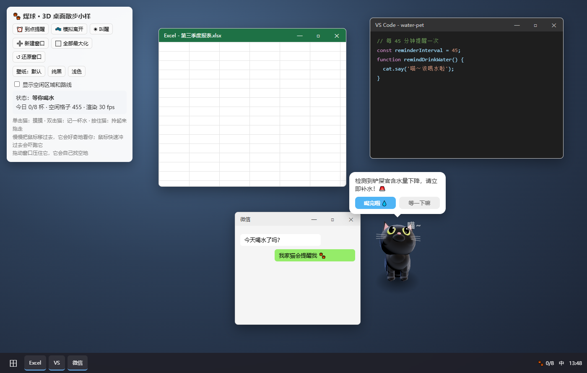

1. 产品概述
煤球是一个 Windows 桌面端小工具。一只 Q 版 3D 纯黑猫住在你的桌面上，会在没有窗口的空地上走来走去、舔爪、伸懒腰、打盹；到点就跑到你身边喵喵叫，提醒你喝水，并记录每天的饮水量。
| 目标用户 | 长时间坐在电脑前、经常忘记喝水的上班族、学生、程序员 |
|---|---|
| 核心价值 | 用"养猫"的情感陪伴代替冷冰冰的弹窗，让喝水提醒不烦人、有反馈、想坚持 |
| 设计原则 | ① 不打扰：不抢焦点、不挡操作、全屏时自动安静 ② 够可爱：表情丰富、台词俏皮 ③ 有反馈：喝完水后猫咪有明显的开心回应，水碗水位上涨 |
| 运行平台 | Windows 10（1809 及以上）/ Windows 11，x64 |
| 形态 | 本地安装的桌面应用（.exe 安装包），无账号，数据只存在本机；默认不联网，只有接入语音服务（以后还有 AI 对话）时才联网 |
2. 形象设计（3D）
🎮 可以玩的 3D 小样：打开 cat-3d-prototype.html（需要联网加载 Three.js）。里面模拟了一个桌面，可以拖窗口、最大化，看煤球怎么找空地散步。

2.1 为什么用 3D
| 需求 | 3D 怎么满足 |
|---|---|
| 满桌面走来走去 | 往任意方向走都能自然转身：往上走看到背影，往下走面朝你，横着走看到侧面 |
| 灵动 | 走路步态、尾巴波浪摆动、转头看鼠标、眨眼、抖耳朵、呼吸起伏，全部实时计算 |
| 效果可以随时改 | 猫的骨骼和动作全部由代码驱动（关键姿势混合 + 程序化动画），不依赖图形编辑器 |
2.2 造型
| 部位 | 设计 | 颜色 / 材质 |
|---|---|---|
| 整体比例 | Q 版：大头（1.25 倍）、短圆身子、短粗腿 | — |
| 毛发 | 哑光黑色 + 绒毛反光（sheen），不像塑料 | #17171b |
| 轮廓光 | 两盏轮廓光固定在镜头后方，猫无论朝哪边，边缘都有一圈淡淡的亮边，在纯黑壁纸上也看得清 | 冷白 + 暖白 |
| 眼睛 | 黄绿色大眼睛 + 竖瞳 + 高光；瞳孔会跟着鼠标转，受惊时放大 | #c9e84a |
| 鼻子 / 内耳 / 肉垫 | 粉色点缀；趴着的时候能看到粉色肉垫 | #f29aac |
| 尾巴 | 13 节骨骼，每帧生成一根平滑渐细的管子，从根部到尾尖做波浪摆动 | — |
| 地面阴影 | 脚下一团柔和的椭圆阴影，让猫"站"在桌面上；被拎起来时阴影消失 | — |
2.3 模型来源
| 阶段 | 方案 |
|---|---|
| 现在（小样） | 代码搭建的 Q 版黑猫：基本几何体拼出来，所有部位都能用参数调整 |
| 正式版（可选升级） | 换成更精细的 glTF 模型（例如 Sketchfab 上 CC BY 授权的带骨骼黑猫，需要署名），用 Blender 的 Python 脚本补表情；动作系统不变 |
2.4 动作与表情一览
| 行为 | 姿势与表现 | 什么时候出现 |
|---|---|---|
| 散步 wander | 对角小跑步态，尾巴竖起轻摆，按照移动距离推进步伐（不滑步） | 空闲时随机，约一半时间在走 |
| 坐着 sit | 前身抬起、后腿收在身下，大多数时候转过来面向你 | 走累了随机坐下 |
| 站着张望 stand | 四脚站立，转头看看四周 | 随机 |
| 舔爪洗脸 groom | 坐着抬起右前爪到嘴边，低头舔，眯眼 | 随机 |
| 伸懒腰 stretch | 前爪往前伸、屁股翘高、尾巴竖起、打哈欠 | 随机 / 睡醒时 |
| 趴着休息 rest | 揣手趴下，半眯眼，尾巴绕到身边 | 随机 |
| 睡觉 sleep | 团成一团、闭眼、呼吸变慢、冒 Zzz，渲染降到 10 帧 | 你离开电脑时 |
| 溜走 flee | 耳朵往后压，快跑离开 | 窗口压过来 / 鼠标猛冲过来 |
| 好奇 look | 转头盯着鼠标，竖起耳朵，瞳孔跟随 | 鼠标慢慢靠近时 |
| 被摸 petted | 眯眼、歪头、尾巴竖起、冒爱心 | 单击猫 |
| 被拎起 lifted | 身体被拎直、四条腿乱蹬、尾巴垂下、瞳孔放大、耳朵往后压 | 按住猫拖动 |
| 提醒 remind | 跑到鼠标附近坐下，抬头看你，张嘴喵喵叫，歪头，竖耳朵 | 到点提醒 |
| 开心 happy | 眯眼、跳一跳、尾巴高高竖起、冒水滴 | 喝完水 |
| 傲娇 sulk | 转过身背对你，尾巴快速甩动，耳朵往后压 | 点"等一下嘛" |
3. 桌面散步设计
3.1 不影响办公的几条原则
| 原则 | 做法 |
|---|---|
| 只走空地 | 实时获取所有可见窗口的位置，把桌面切成 24 像素的网格，算出猫能完整站下、又不碰任何窗口的格子，只在这些格子里走动 |
| 绕路而不是穿过 | 用广度优先搜索规划路线，再把折线拉直成自然的路径；被窗口隔开的空地不会直接"穿墙"过去 |
| 被压住就让开 | 你拖动或打开窗口盖住猫时，它会说"喵！差点被压到！"，然后跑到最近的空地 |
| 没空地就去任务栏 | 窗口全都最大化时，猫跑到任务栏上沿来回溜达或坐着，不挡窗口内容；一有空地就回到桌面 |
| 不抢鼠标 | 猫以外的区域全部点击穿透；只有点到猫身上才算和它互动 |
| 不抢焦点 | 猫的窗口永远不获取键盘焦点，你打字不会被打断 |
| 省电 | 正常 30 帧，睡觉 10 帧；正式版里猫静止不动时还会再降帧 |
3.2 散步行为规则
| 编号 | 规则 |
|---|---|
| W1 | 每段行为结束后随机选下一个：散步约 48%、坐 16%、站 8%、舔爪 12%、伸懒腰 7%、趴着 9% |
| W2 | 散步目的地在当前位置 4~28 格范围内随机挑选，速度约 62 像素/秒 |
| W3 | 转身角度太大时先原地转身再走，不会"倒着走" |
| W4 | 鼠标慢慢靠近：猫转头看你、竖耳朵，等你来摸（不会跑） |
| W5 | 鼠标高速冲向猫（超过 1400 像素/秒）：被吓到，往远离鼠标的方向跑开 |
| W6 | 刚被摸过 3 秒内不会被吓跑 |
| W7 | 提醒时跑到离鼠标约 190 像素的空地坐下，保证你一眼看到它，又不会挡住鼠标正在操作的地方 |
| W8 | 拎起来放下：放到空地 → 自由散步；放到窗口上 → 就待在那儿（你放的位置说了算）；放到屏幕底边 → 沿边缘溜达 |
3.3 三种散步模式（右键菜单切换）
| 模式 | 表现 | 怎么进入 |
|---|---|---|
| 🐾 自由散步（默认） | 在空地上散步、偷看；没有空地时自动去屏幕底边，有空地了再回来 | 默认 / 右键菜单 / 放到空地上 |
| 📌 待在这里 | 原地坐、舔爪、趴着、睡觉，不走动；窗口压过来也不躲（浮在最上层）；提醒时原地喵喵叫 | 右键菜单 / 把它放到窗口上 |
| ⬇ 在边缘溜达 | 只在屏幕底边（任务栏上沿）走，从屏幕两侧、任务栏后面探头 | 右键菜单 / 把它放到屏幕底边 |
3.4 全屏工作时
| 场景 | 表现 |
|---|---|
| 窗口全部最大化 | 没有空地 → 猫浮在最上层，沿任务栏上沿溜达，从任务栏后面、屏幕两侧探头 |
| 全屏应用（F11、全屏视频、PPT） | 任务栏被盖住 → 猫走到屏幕最底边，一半时间躲在屏幕下面只露出脑袋偷看，更低调 |
| 随时可以手动拖拽 | 按住猫拎起来放到任何地方，它会待在那里 |
3.5 🙈 偷看（躲猫猫）
煤球会找个地方躲起来，悄悄探出脑袋看看主人在做什么。这是它最有"灵魂"的行为。
| 藏身处 | 探头方式 |
|---|---|
| 窗口左右两侧 | 躲在窗口后面，从侧边探出半个脑袋，歪着头 |
| 窗口顶边 | 躲在窗口后面，两只前爪扒着窗口上沿，脑袋冒出来 |
| 任务栏后面 | 从任务栏上沿冒头 |
| 屏幕左右边缘 | 躲在屏幕外面，从边缘探出半个脑袋 |
| 屏幕底边（全屏时） | 躲在屏幕下面，从底边冒头 |
蹑手蹑脚走过去（压低身子、耳朵朝前、步子小）
→ 钻进去一半，尾巴尖还露在外面得意地晃（藏头露尾）
→ 整个藏好，在里面偷偷转身
→ 慢慢探出半个脑袋，歪头、竖耳朵，眼珠跟着你的鼠标转，偶尔冒 👀 / ？
→ ┬ 鼠标指到它头上：愣住、瞪大眼睛"喵？"——"被、被发现了…" → 嗖地缩回去 → 过一会儿再偷偷探出来（躲猫猫）
├ 鼠标猛冲过来：嗖地缩回去
├ 被摸头：害羞冒爱心、呼噜，但不出来
└ 看够了：有时自己缩回去再探一次，最后从藏身处走出来继续散步
你拖动它藏身的窗口：它扒着窗口跟着一起走
窗口被最小化 / 关掉：它"哇！我的掩护没了！"，然后找地方落脚
| 技术要点 | 做法 |
|---|---|
| "躲在窗口后面"的效果 | 猫的窗口始终在最上层；把猫和藏身窗口重叠的部分裁成透明（正式版用 CSS clip-path / WebGL 裁剪），看起来就像躲在后面 |
| 点击 | 被裁掉的部分不算猫身体，点击直接穿透到下面的窗口 |
| 选藏身处 | 脑袋探出去的地方必须在屏幕内、不被别的窗口挡；身体必须能完全藏进窗口；藏之前站的位置必须走得到 |
| 频率 | 自由散步时约 16%；在边缘时约 30%；全屏时约 50% |
4. 功能清单
P0 第一版必须有（MVP） P1 体验增强 P2 锦上添花（可选）
| 编号 | 优先级 | 模块 | 功能 | 说明 |
|---|---|---|---|---|
| F01 | P0 | 窗口 | 透明悬浮窗 | 无边框、背景透明、始终置顶、不显示在任务栏、不抢键盘焦点 |
| F02 | P0 | 窗口 | 点击穿透 | 猫身体以外的透明区域可以直接点到下面的桌面/窗口 |
| F03 | P0 | 交互 | 拎起来换位置 | 按住猫拎起来放到别处；放到窗口上它会自己走到空地；下次启动回到上次的位置，拔掉副屏后自动回到主屏 |
| F04 | P0 | 形象 | 3D 黑猫与日常动作 | Q 版 3D 黑猫；呼吸、眨眼、甩尾巴、抖耳朵、坐、站、舔爪、伸懒腰、趴着（见 2.4） |
| F30 | P0 | 散步 | 桌面散步 | 在空地上随机散步，按方向自然转身，步伐和移动距离对齐不滑步（见第 3 节） |
| F31 | P0 | 散步 | 空地检测与避让 | 实时获取窗口位置，只走空地、绕开窗口；窗口压过来时自己跑开 |
| F32 | P0 | 散步 | 任务栏栖息 | 没有空地（窗口全最大化）时，去任务栏上沿溜达；有空地后回到桌面 |
| F33 | P1 | 散步 | 鼠标互动 | 鼠标慢慢靠近：好奇地看；鼠标猛冲过来：吓跑 |
| F35 | P0 | 散步 | 偷看（躲猫猫） | 躲在窗口侧边/顶边、任务栏、屏幕边缘后面探头偷看，会被"抓包"（见 3.5） |
| F36 | P0 | 散步 | 散步模式 + 全屏适配 | 自由散步 / 待在这里 / 在边缘溜达；全屏时浮在最上层、在屏幕底边低调偷看（见 3.3、3.4） |
| F37 | P0 | 声音 | 猫叫 + 语音提醒 | 合成猫叫、呼噜；提醒时先"喵～"再用语音说台词，气泡文字当字幕（见第 14 节） |
| F38 | P1 | 声音 | 带情绪的高质量语音 | ✅ 已用萌丫头音色按情绪预生成 46 句，离线播放（见 14.4） |
| F39 | P0 | 扩展 | 技能菜单 | 右键猫弹出技能菜单，技能统一注册，方便以后加截屏、AI 对话（见第 15 节） |
| F40 | P2 | 扩展 | 截屏 / AI 对话等技能 | 后续能力，先在菜单里占位"即将推出" |
| F05 | P0 | 提醒 | 定时提醒 | 默认每 45 分钟一次，从上次喝水开始计时 |
| F06 | P0 | 提醒 | 提醒气泡 | 猫跳起来 + 对话气泡（随机台词）+「喝完啦」「等一下嘛」两个按钮 |
| F07 | P0 | 提醒 | 稍后提醒 | 点「等一下嘛」后 10 分钟再提醒，猫傲娇转身 |
| F08 | P0 | 记录 | 饮水打卡 | 气泡按钮、双击猫、右键菜单、托盘菜单都能记一杯 |
| F09 | P0 | 系统 | 系统托盘 | 托盘图标 + 菜单；悬停显示今日进度和下次提醒时间 |
| F10 | P0 | 系统 | 防多开 | 重复启动时只把已有的猫叫出来 |
| F11 | P1 | 记录 | 水碗进度 | 提醒时猫身边出现一个 3D 小水碗，水位随今日杯数上涨，达标后冒爱心 + 庆祝台词 |
| F12 | P1 | 形象 | 情绪系统 | 开心 / 普通 / 口渴 / 生气 / 睡觉等状态自动切换（见第 7 节） |
| F13 | P1 | 形象 | 目光跟随鼠标 | 鼠标在附近时转头看你，瞳孔跟着鼠标转 |
| F14 | P1 | 交互 | 右键菜单 | 快捷记一杯（可选容量）、撤销、今日统计、暂停、设置、隐藏 |
| F15 | P1 | 记录 | 撤销上一杯 | 误点后 1 分钟内可撤销，也可以在右键菜单里撤销 |
| F16 | P1 | 提醒 | 工作时段 / 勿扰时段 | 只在工作时段提醒；午休等勿扰时段不提醒 |
| F17 | P1 | 提醒 | 离开检测 | 键鼠 5 分钟无操作就暂停计时，人回来后重新开始 |
| F18 | P1 | 提醒 | 全屏免打扰 | 全屏游戏 / 看视频 / 放 PPT 时推迟提醒，退出全屏后再提醒 |
| F19 | P1 | 提醒 | 提醒升级 | 忽略提醒后猫逐步变得口渴、生气，提醒更明显 |
| F20 | P1 | 系统 | 设置窗口 | 所有设置项（见第 8 节） |
| F21 | P1 | 系统 | 开机自启 | 设置里开关，默认关闭 |
| F22 | P1 | 形象 | 音效 | 喵～、呼噜、舔水声，可调音量 / 关闭 |
| F23 | P1 | 散步 | 活跃度 / 散步范围 | 活跃度：安静（多坐少走）/ 正常 / 活泼；范围：整个桌面 / 只在任务栏上方 / 待在原地不走 |
| F24 | P1 | 窗口 | 猫咪大小 | 可调 75% / 100% / 125% / 150% |
| F25 | P2 | 统计 | 历史统计 | 近 7 天 / 30 天饮水柱状图、达标率、连续达标天数 |
| F26 | P2 | 统计 | 成就徽章 | 连续 3 / 7 / 30 天达标、单日 10 杯等 |
| F27 | P2 | 形象 | 配饰换装 | 铃铛项圈、蝴蝶结、围巾、节日帽子；可用成就解锁 |
| F28 | P2 | 散步 | 爬窗口 | 跳上窗口标题栏，在上面走、趴着，从一个窗口跳到另一个窗口（经典桌宠 Shimeji 玩法） |
| F34 | P2 | 散步 | 跨显示器散步 | 多显示器时可以从一块屏幕走到另一块 |
| F29 | P2 | 形象 | 节日彩蛋 | 春节、万圣节（黑猫主场！）、生日等特殊台词和装扮 |
5. 交互说明
5.1 鼠标操作
| 操作 | 效果 |
|---|---|
| 鼠标慢慢靠近 | 猫转头盯着鼠标、竖起耳朵，等你来摸 |
| 鼠标猛冲过去 | 猫被吓到「喵嗷！」，往远离鼠标的方向跑开 |
| 悬停在猫身上 | 鼠标变成小手；1 秒后显示小提示「今日 3/8 杯 · 下次 15:45」 |
| 单击猫 | 摸摸：眯眼歪头、冒爱心、随机撒娇台词（不记录喝水）；睡着时会被叫醒并伸懒腰 |
| 双击猫 | 快速记一杯（默认容量），猫开心跳一跳 |
| 按住拖动 | 把猫拎起来：四爪乱蹬「放本喵下来！」；放下后如果落在窗口上，它会自己走到空地 |
| 右键猫 | 弹出技能菜单（见 5.2） |
| 偷看时鼠标指到它头上 | 被"抓包"：愣住"喵？"，嗖地缩回去，过一会儿再探出来 |
| 提醒气泡「喝完啦」 | 记一杯 → 开心状态 3 秒 → 重新计时 |
| 提醒气泡「等一下嘛」 | 傲娇转身 → 10 分钟后再提醒 |
| 托盘图标左键 | 显示 / 隐藏煤球 |
| 托盘图标右键 | 弹出托盘菜单 |
5.2 菜单设计
技能菜单（右键猫）
托盘菜单
6. 提醒规则
| 编号 | 规则 | 说明 |
|---|---|---|
| R1 | 计时起点 | 从上一次喝水开始计时；当天第一次启动时从启动时间开始计时 |
| R2 | 任何时候记一杯都重新计时 | 不管是不是在提醒中，主动喝水都重新开始计时 |
| R3 | 工作时段 | 默认 09:00–18:00 才提醒（可关闭此限制）；时段外不计时 |
| R4 | 勿扰时段 | 默认 12:00–13:30 午休不提醒，可添加多个时段 |
| R5 | 离开检测 | 键鼠 5 分钟无操作 → 暂停计时，猫进入睡觉状态；有操作后重新开始计时（猫醒来说"欢迎回来～"） |
| R6 | 全屏免打扰 | 检测到全屏 / 演示模式时推迟提醒；退出后 1 分钟再提醒 |
| R7 | 气泡停留 | 提醒气泡显示 60 秒，没有操作就收起，算作"忽略" |
| R8 | 提醒升级 | 忽略 1 次 → 口渴状态，10 分钟后再提醒；忽略 2 次及以上 → 生气状态，之后每 10 分钟提醒一次 |
| R9 | 手动暂停 | 托盘 / 右键菜单可暂停 30 分钟、1 小时或今天 |
| R10 | 每日重置 | 每天凌晨 4:00 重置今日杯数（照顾熬夜的人） |
| R11 | 达标之后 | 达成每日目标后继续提醒，但改用温和台词，频率不变 |
7. 煤球状态机
┌──────────────── 日常行为（随机轮换，见 W1）────────────────┐
│ [散步 wander] ⇄ [坐 sit] ⇄ [站 stand] ⇄ [舔爪 groom] │
│ ⇅ ⇅ │
│ [伸懒腰 stretch] [趴着 rest] │
└──────┬─────────────────────────────────────────────────────┘
│
├──窗口压过来 / 鼠标猛冲──▶ [溜走 flee] ──到达空地──▶ 日常行为
├──没有空地──▶ [溜走 flee] ──▶ 任务栏上沿（日常行为继续，只在任务栏上走）
├──单击──▶ [被摸 petted] ──2秒──▶ 日常行为
├──按住拖动──▶ [被拎起 lifted] ──松手──▶ [落地 landing] ──▶ 日常行为 / 溜走
├──5分钟无键鼠操作──▶ [睡觉 sleep] ──有操作 / 被点──▶ [伸懒腰] ──▶ 日常行为
│
└──到点──▶ [跑过来 goRemind] ──▶ [提醒 remind] ──喝完啦──▶ [开心 happy] ──3秒──▶ 日常行为
│
├──等一下嘛──▶ [傲娇 sulk] ──3秒──▶ 日常行为（10分钟后再提醒）
└──60秒无响应──▶ [口渴 thirsty] ──再次忽略──▶ [生气 angry]
└──── 喝完啦 ────┴──▶ [开心]
优先级（高 → 低）：被拎起 > 提醒/口渴/生气 > 溜走 > 开心/傲娇/被摸 > 睡觉 > 日常行为
提醒中被窗口压住：先溜走，到空地后继续提醒
8. 设置项
设置窗口从托盘「⚙ 设置…」或右键猫「⚙ 设置…」打开；修改后自动保存、立即生效，保存在本机 %APPDATA%\com.meiqiu.waterpet\settings.json。托盘里还有「🔊 声音」「🚀 开机自启」两个快捷勾选项，和设置窗口同步。
| 分组 | 设置项 | 默认值 | 可选范围 |
|---|---|---|---|
| 💧 喝水提醒 | 多久提醒一次 | 45 分钟 | 15–180 分钟 |
| 点"等一下嘛"后多久再提醒 | 10 分钟 | 5–30 分钟 | |
| 只在工作时段提醒 | 开启，09:00–17:30 | 可关闭、可改时间 | |
| 勿扰时段 | 午休 11:30–13:00 | 最多 5 段，每段可单独开关 | |
| 全屏时不打扰 | 开启 | 开 / 关 | |
| 离开电脑多久算"不在" | 5 分钟 | 3–30 分钟 | |
| 📅 定时提醒 | 📝 录单子 | 17:00，周一到周五 | 最多 10 条；时间、标题、要说的话、星期几都能改；不受工作时段/勿扰时段限制；点"等一下嘛"会稍后再提醒，直到点"做完啦" |
| 🕠 下班打卡 | 17:30，周一到周五 | ||
| 🥤 饮水 | 每日目标 | 8 杯 | 1–20 杯 |
| 每杯容量 | 250 ml | 50–1000 ml | |
| 🔊 声音 | 声音开关 | 开 | 开 / 关（托盘、右键菜单也能切换） |
| 声音模式 | 猫叫 + 说话 | 猫叫 + 说话 / 只有猫叫 | |
| 音量 | 80% | 0–100% | |
| 🐾 散步 | 启动时的散步模式 | 自由散步 | 自由散步 / 待在原地 / 在屏幕边缘 |
| 活跃度 | 正常 | 安静（多坐少走）/ 正常 / 活泼 | |
| 鼠标猛冲会吓跑 | 开 | 开 / 关 | |
| ⚙ 系统 | 开机自动启动 | 关 | 开 / 关（托盘也能切换） |
下一步计划：猫咪大小（75%–150%，需要窗口尺寸和走路/偷看距离一起缩放）、饮水历史统计。
9. 数据设计
所有数据保存在本机 %APPDATA%\com.meiqiu.waterpet\，不上传任何地方。
9.1 设置（settings.json，tauri-plugin-store）
保存第 8 节的所有设置项，以及猫咪最后的位置 { x, y, monitorName, isPerching }。
9.2 饮水记录表 drink_records（SQLite）
| 字段 | 类型 | 说明 |
|---|---|---|
| id | INTEGER PK | 自增主键 |
| drank_at | TEXT | 喝水时间（本地时间 ISO 8601） |
| stat_date | TEXT | 归属日期（按凌晨 4 点切分），建索引，方便按天统计 |
| volume_ml | INTEGER | 本次饮水量 |
| source | TEXT | 记录来源：bubble / double_click / context_menu / tray |
9.3 提醒事件表 reminder_events（SQLite）
| 字段 | 类型 | 说明 |
|---|---|---|
| id | INTEGER PK | 自增主键 |
| fired_at | TEXT | 提醒时间 |
| result | TEXT | drank（喝了）/ snoozed（稍后）/ ignored（忽略） |
| escalation_level | INTEGER | 升级等级：0 正常 / 1 口渴 / 2 生气 |
提醒事件表用来做"提醒响应率"统计（P2），也方便以后调整提醒策略。
10. 技术架构
┌──────────────────────── 煤球.exe（Windows 桌面应用）────────────────────────┐
│ │
│ ┌──────────── 界面层（Vue 3 + TS，WebView2 渲染）────────────┐ │
│ │ 宠物窗口（只有猫那么大，跟着猫移动）： │ │
│ │ BlackCatModel.ts Three.js 3D 黑猫（骨骼 + 姿势混合） │ │
│ │ CatBrain.ts 行为状态机：散步/坐/舔爪/睡觉/提醒… │ │
│ │ FreeSpaceMap.ts 空地网格 + 寻路（BFS + 路径拉直） │ │
│ │ SpeechBubble · WaterBowl · dialogueLines.ts（台词） │ │
│ │ 设置窗口 / 统计窗口（按需创建，关闭即销毁） │ │
│ └──────────────────────┬──────────────────────────────────────┘ │
│ invoke 命令 ▲│▼ emit 事件 │
│ ┌──────────────────────┴──── 核心层（Rust）──────────────────────┐ │
│ │ desktop_layout Win32：EnumWindows 列出可见窗口矩形 │ │
│ │ （排除最小化/隐藏/cloaked 窗口） │ │
│ │ SetWinEventHook 监听窗口移动，变化才推送 │ │
│ │ pet_window SetWindowPos 移动猫窗口（不抢焦点） │ │
│ │ 位置记忆、多显示器校验 │ │
│ │ reminder_scheduler 提醒调度（tokio 定时、升级、暂停） │ │
│ │ click_through 鼠标命中检测 → 自动切换点击穿透 │ │
│ │ system_state Win32：GetLastInputInfo（离开检测） │ │
│ │ SHQueryUserNotificationState（全屏）│ │
│ │ tray 托盘图标与菜单 │ │
│ │ drink_records SQLite（rusqlite，WAL 模式） │ │
│ │ settings tauri-plugin-store │ │
│ └────────────────────────────────────────────────────────────────┘ │
│ 官方插件：autostart · single-instance · store · notification（兜底） │
└──────────────────────────────────────────────────────────────────────────────┘
前后端通信
| 方向 | 名称 | 用途 |
|---|---|---|
| 前端 → Rust | record_drink(volume_ml, source) | 记一杯，返回今日进度 |
| 前端 → Rust | undo_last_drink() | 撤销上一杯 |
| 前端 → Rust | snooze_reminder() | 稍后提醒 |
| 前端 → Rust | get_today_summary() | 今日杯数、目标、下次提醒时间 |
| 前端 → Rust | update_hit_region(rects) | 上报猫的轮廓区域，用于点击穿透判断 |
| 前端 → Rust | move_pet_window(x, y) | 猫走动时移动猫窗口（约 30 次/秒，不抢焦点） |
| 前端 → Rust | get_desktop_layout() | 获取工作区和所有可见窗口的矩形，用来计算空地 |
| Rust → 前端 | desktop-layout-changed | 窗口移动、打开、关闭、最大化时推送新布局 |
| 前端 → Rust | get_settings() / save_settings() | 读写设置 |
| Rust → 前端 | reminder-fired | 到点提醒（带升级等级） |
| Rust → 前端 | user-away / user-back | 离开 / 回来，切换睡觉状态 |
| Rust → 前端 | drink-recorded | 从托盘记一杯时同步给宠物窗口 |
| Rust → 前端 | settings-changed | 设置变化后实时生效 |
11. 性能与质量目标
< 10 MB
安装包体积
< 100 MB
内存（含 WebView2 + WebGL）
< 2%
散步时 CPU（睡觉时 < 0.5%）
< 1 秒
启动到猫出现
| 方面 | 要求 |
|---|---|
| 渲染 | WebGL 画布只有猫那么大（约 240×240）；散步时 30 帧、睡觉 10 帧；静止时降帧；集成显卡也能流畅运行 |
| 空地计算 | 只在窗口布局变化时重算（事件驱动，不轮询），一次计算不超过 2 毫秒 |
| 高 DPI | 支持 100%–200% 系统缩放，按设备像素比渲染，3D 不糊 |
| 多显示器 | 可以拎到任意显示器；显示器拔掉后自动回到主屏 |
| 数据安全 | SQLite WAL 模式，异常退出不丢记录；不联网、不收集任何数据 |
| 权限 | Tauri capabilities 最小权限白名单，前端只能调用列出的命令 |
| 稳定性 | 连续运行 7 天无内存泄漏、提醒不漂移 |
12. 开发里程碑
| 阶段 | 内容 | 验收标准 |
|---|---|---|
| 第 0 步：环境 | 升级 Rust、安装 Tauri CLI | cargo tauri info 全部通过 |
| 第 1 步：搭骨架 | Tauri 2 + Vue 项目，透明置顶小窗口里显示 3D 黑猫（把小样的模型代码移植过来） | 桌面上出现会呼吸眨眼的煤球，背景透明 |
| 第 2 步：能散步 | F01–F04、F30–F32、F09、F10 | 在真实桌面上绕开窗口散步、窗口压过来会躲、能点穿、能拎起来、能从托盘隐藏/退出 |
| 第 3 步：会提醒（MVP） | F05–F08 | 到点跑过来提醒、打卡、稍后提醒全流程可用 |
| 第 4 步：有灵魂 | F12、F13、F19、F22、F33，全部动作与台词 | 各状态切换自然，没有闪烁和滑步 |
| 第 5 步：可配置 | F11、F14–F18、F20、F21、F23、F24 | 所有设置立即生效，重启后保持 |
| 第 6 步：打包 | NSIS 安装包、图标、版本信息 | 在干净的 Win10 / Win11 上安装、运行、卸载正常 |
| 第 7 步（可选） | F25–F29、F34 | — |
14. 声音设计
14.1 两层声音
| 层 | 内容 | 实现 |
|---|---|---|
| 猫叫声 | 提醒"喵～～"、打招呼"喵"、被抓包"喵？"（尾音上扬）、被吓"喵嗷！"、被拎起抗议、被摸"呼噜呼噜" | Web Audio 实时合成（锯齿波 + 共振峰滤波 + 颤音；呼噜 = 低频噪声 + 25Hz 起伏），不需要音频文件 |
| 说话 | 先喵一声，再用可爱的声音念出台词；气泡文字同步显示，相当于字幕 | 现在：系统语音合成（音调调高）。正式版：接入带音色、带情绪的语音服务 |
14.2 什么时候出声
| 时刻 | 声音 | 情绪 |
|---|---|---|
| 到点提醒 | 喵～～ + 说提醒台词（一定出声） | 撒娇 coquettish |
| 喝完水 / 达标 | 喵 + "呼噜呼噜～今天第 3 杯啦" | 开心 happy |
| 点"等一下嘛" | 喵 + "哼！10 分钟后本喵还会回来的" | 委屈 aggrieved |
| 被叫醒 | "喵…谁叫醒本喵的" | 委屈 aggrieved |
| 被摸 | 只呼噜，不说话 | — |
| 偷看 | 保持安静；被抓包才"喵？"一声 | 惊讶 surprised |
| 被吓 / 被拎起 | 只有猫叫 | — |
14.3 不打扰规则
| 规则 | 说明 |
|---|---|
| 说话冷却 | 非提醒类的说话至少间隔 6 秒，不唠叨 |
| 开会自动静音 | 检测到麦克风正在被使用（腾讯会议、Teams 等通话中），只显示文字不出声 |
| 全屏 / 勿扰时段 | 默认只出猫叫、不说话（可设置） |
| 声音模式 | 猫叫 + 说话 / 只有猫叫 / 静音，托盘和右键菜单一键切换 |
14.4 预生成语音（已完成 ✅）
| 项目 | 内容 |
|---|---|
| 音色 | 萌丫头（童声女） zh_female_mengyatou_uranus_bigtts，火山 seed-tts-2.0；试听对比见 voice/audition.html |
| 台词 | 46 句（提醒、口渴、生气、第 1~12 杯、达标、稍后、睡醒、偷看被抓包、被吓、被拎起、切换模式……），共 1.3MB |
| 离线 | 构建时生成 mp3 打包进安装包，运行时不联网、无延迟；缺文件时退回系统语音 |
| 生成工具 | tools/voice-generator/：voice-lines.json（台词 + 情绪）+ generate-voice-lines.mjs（批量生成，密钥只从环境变量读取） |
| 情绪 | 语气提示（传给 context_texts） | 语速 |
|---|---|---|
| 撒娇（提醒） | 撒娇、软萌、黏人，声音甜甜的，尾音稍微拖长 | -8 |
| 开心（喝水） | 开心、雀跃、奶声奶气 | +6 |
| 得意（达标） | 得意洋洋、骄傲又可爱 | 0 |
| 委屈（稍后） | 委屈、傲娇、小声嘟囔 | -6 |
| 惊讶（被抓包/被吓） | 被吓一跳、慌慌张张又可爱 | +12 |
| 害羞（偷看被摸） | 害羞、小小声、甜甜的 | -12 |
| 睡醒 | 刚睡醒、迷迷糊糊、懒洋洋，像在打哈欠 | -20 |
| 偷偷摸摸 | 压低声音、神秘兮兮 | -10 |
| 生气（多次忽略） | 气鼓鼓、奶凶奶凶 | +8 |
⚠️ 现在用的是测试环境的接口账号，只适合小样和课程演示。正式发布前用正式账号重新跑一遍生成脚本即可，代码不用改。新增台词：往
voice-lines.json 加一条再运行脚本，已生成的会自动跳过。14.5 以后的动态语音（AI 对话等）
| 环节 | 设计 |
|---|---|
| 统一接口 | VoiceProvider.synthesize(text, { emotion, voiceId }) → 音频；系统语音、你的语音服务都实现这个接口，随时切换 |
| 固定台词 | 所有固定台词（每句都标好情绪）提前生成好，缓存到本地，离线也能播放，没有延迟 |
| 动态台词 | "今天第 N 杯"之类的句子按需生成并缓存；以后的 AI 对话用流式合成 |
| 密钥安全 | API Key 只放在 Rust 后端，从环境变量 / 系统凭据读取，不写进代码，前端拿不到 |
| 失败兜底 | 语音服务连不上时自动退回系统语音或只有猫叫 |
15. 扩展技能架构（为截屏、AI 对话等预留）
煤球现在只是宠物，但以后会加很多"技能"。所以从第一版起，所有能力都通过技能注册表接入：
// 每个技能一条记录，菜单、快捷键、以后的语音指令都从这里读取
{
id: 'screenshot', // 唯一标识
icon: '📷', label: '截屏',
group: 'tools', // 菜单分组
isAvailable: () => true, // 是否可用（比如需要联网的技能）
run: async (context) => { // context 提供：猫（让它做动作、说话）、Rust 命令调用、设置
context.cat.say('咔嚓！');
await context.invoke('capture_screen');
},
}
| 以后可能的技能 | 和猫的互动 |
|---|---|
| 📷 截屏 | 猫跳起来"咔嚓"，截图后叼着缩略图跑过来 |
| 💬 AI 对话 | 在猫旁边弹出聊天框，猫用语音回答，说话时张嘴 |
| 📝 便签 / 待办 | 猫叼着便签条 |
| 🍅 番茄钟 | 猫趴着陪你专注，时间到伸懒腰提醒休息 |
现在的右键菜单已经按这个结构实现（见 3D 小样），截屏和 AI 对话先显示"即将推出"。
13. 待确认 / 建议补充
下面这些需要你拍板，或者是我建议考虑加上的功能：
- 默认值是否合适？每 45 分钟提醒、每天 8 杯、每杯 250ml、工作时段 9:00–18:00、午休 12:00–13:30 可以改成你自己的作息
- 猫的造型满意吗？先玩一下 3D 小样，告诉我哪里要改（比例、颜色、眼睛、动作快慢、走路频率……） 也可以考虑以后换成 Sketchfab 上更精细的模型
- 听一下预生成的语音：在 3D 小样里点"🔊 试听"、到点提醒、喝水，听听语气和语速合不合适
哪句不满意告诉我，可以单独重新生成（例如
--only=remind-01 --force） - 散步的"存在感"：现在约一半时间在走，你觉得太闹还是刚好？ 对应设置里的"活跃度"，可以定一个默认值
- P2 功能做哪些？历史统计、成就徽章、配饰换装、爬窗口、跨显示器散步、节日彩蛋 建议 MVP 完成后再决定
- 全局快捷键记一杯（例如
Ctrl+Alt+W） 不用找猫，按一下就记录，适合全屏工作时 - 按体重推荐每日目标（体重 kg × 30ml） 首次启动时问一次，更科学
- 首次启动引导 煤球自我介绍 + 教你拖拽、双击、右键的用法
- 饮品类型（水 / 茶 / 咖啡 / 牛奶） 咖啡可以按一定比例折算，会让功能更复杂，建议放 P2
- 数据导出（CSV） 方便自己做分析
- 自动更新（tauri-plugin-updater） 需要一个放更新包的地方（例如 GitHub Releases）；只自己用的话可以不做
- 猫咪名字：就叫「煤球」，还是你想取别的名字？